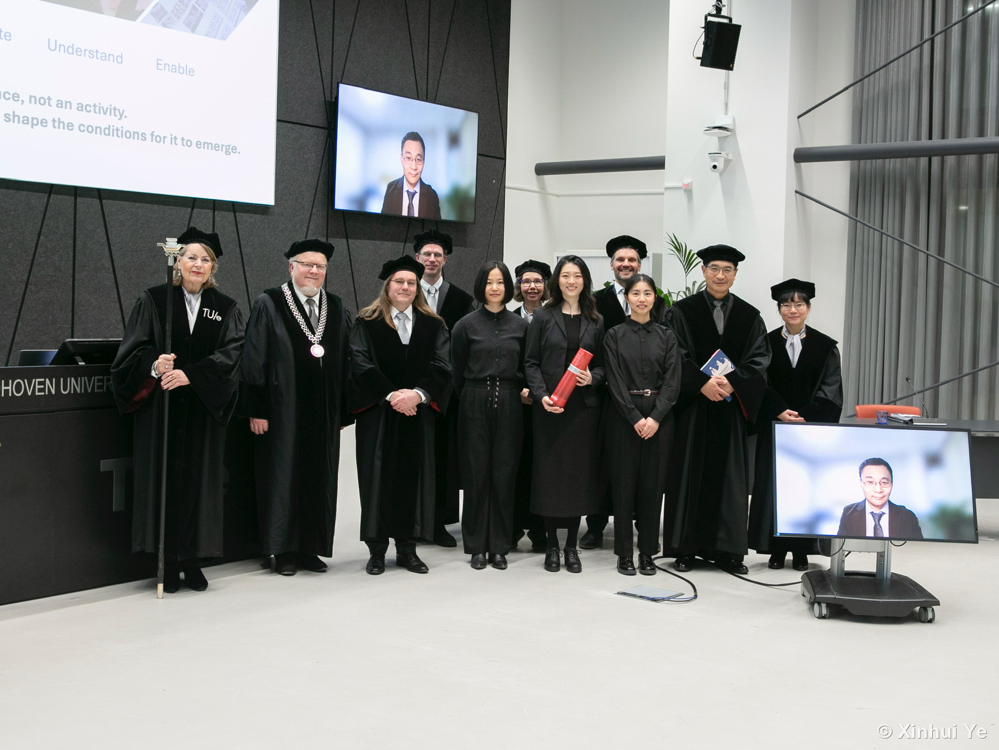
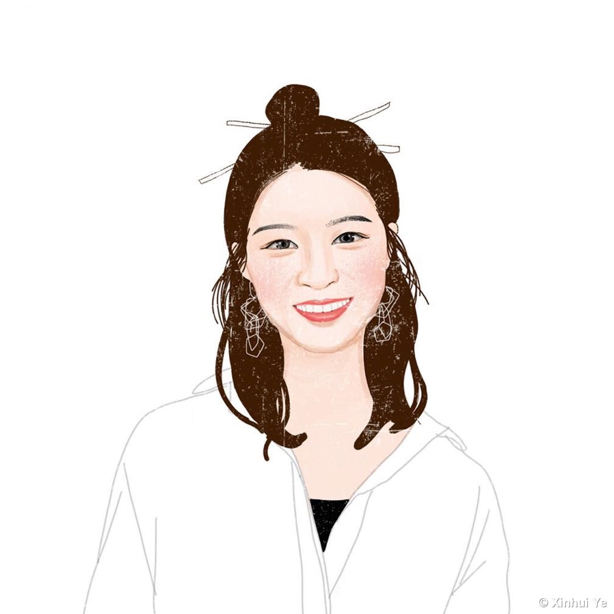

The Story
So Far
Hi, I'm Xinhui, a design researcher. I spend my time figuring out how people think, work, and create, and how to make those things a little better. I started with Industrial Design in Beijing, moved to Germany for a master in Strategic Design, and have spent six years since in the Netherlands researching how design teams co-explore. Somewhere along the way I picked up a useful contradiction: I'm a creative person who likes logic, a passionate one who's good at listening and observing, and someone who loves making things by hand but gets just as excited about new technology.
I teach, too. The best way I've found to support someone learning is to give them a safe space to try, reflect, and ask for help when they're stuck.
Outside of all that, I'm drawn to nature, drawing, and pretty much any kind of making: pottery, jewellery, paper curling, you name it.

Recent
January felt like a full stop and a new paragraph at the same time. I defended my PhD surrounded by people who had been with me throughout, some in the room and some joining online, and somehow managed to feel every emotion at once: nervous, thrilled, proud, a little giddy. The thesis holds six years of work, and I designed the book myself too, from the cover to all the illustrations inside. It felt like the right way to close a chapter that was always, at its heart, about design. I won't forget that day.
After six years of structured deadlines, having no agenda felt strange at first, and then very good. I needed that time to breathe, look around, and figure out what the next chapter looked like. What came next is still taking shape. I teach at SALTO international school in Eindhoven now, which keeps me grounded in the present in a way academia sometimes does not. There is something about working with kids that reminds you how good it feels to figure something out for the first time.
I spend the rest of my time exploring what AI tools can do for design work. Every few weeks something new shows up that shifts what feels possible, and I find that more exciting than overwhelming. It is a fast moving space, and I am genuinely curious about where it goes.
Education
My PhD looked at how designers explore ideas together when they are working remotely. Guided throughout by my supervisors Joep Frens and Jun Hu, I went from finding my feet as a researcher to running detailed studies from start to finish. It all came together in my thesis, Co-Exploration in Remote Design Collaboration.
Master in Strategic Design, where design meets management and research. I learned to look at a problem from every angle, to listen closely to what people actually need, and to shape ideas so that even non experts can follow them. The whole programme was in German, so I learned the language first and then learned to think and design in it. I graduated with sehr gut, the highest grade.
Bachelor in Industrial Design, where my love for design first took shape. This is where I picked up the fundamentals: sketching, prototyping, a bit of coding, ergonomics, CAD, and more. It is also where I came to see that design is not just about making things look pretty. Good design has to make sense, meet real needs, and answer the call of the people using it.
Experiences
I run after school courses for K-12 kids, teaching the basics of coding and robotics through Edison robots and hands on activities. The aim is to make ideas like loops and sequences feel more like play than lessons.
I coached students through the craft of research, at different academic levels and on different courses. I helped them shape a question worth asking, choose the right way to answer it, and make sense of what they found. The goal was always the same: not just to finish one project, but to walk away with research skills they could carry into whatever came next.
At a local Makerspace I helped all sorts of people, curious geeks, kids, and complete beginners, who wanted to turn an idea into something real but were not sure a 3D printer could get them there. Using what I had learned in my bachelor, I showed them the basics of Rhino and SolidWorks and how a simple model becomes a printed object.
My role had two sides. As an advanced player myself, I mentored part of the ensemble and led their practice. On the organising side, I worked with the other section leaders and our director to keep rehearsals, training, and performances running smoothly. We took the stage at least once a year, and recorded two CDs along the way.
CV
Download
kristinyxh@gmail.com
Best, Netherlands
LinkedIn ·
Google Scholar
Xinhui Ye
Design Researcher

PhD researcher trained in mixed methods, with a Master’s in Strategic Design. I turn messy human data into clear, usable insight, running studies from start to finish: objectives, methodology, fieldwork, analysis, and the storytelling that moves stakeholders. Equal parts qualitative depth and quantitative rigour, with a stubborn habit of keeping people at the centre of the decision.
Education
PhD, Human-Computer Interaction (HCI)Eindhoven University of Technology, NL · 2019–2025
MA, Strategic DesignHfG Schwäbisch Gmünd, Germany · 2016–2018
BSc, Industrial DesignBeijing Institute of Technology, China · 2011–2015
Experience
Doctoral Design ResearcherTU Eindhoven · 2019–2025
Coach, Design Research MethodsUniversity teaching · 2020–2023
Coding & Robotics InstructorSTEM, primary education · 2026–present
Vice LeaderBaidi Accordion Orchestra · 2011–2015
Languages
- English — C1
- German — B1+
- Dutch — B1
- Chinese — native
Research & Methods
- Mixed-method research design
- In-depth interviews
- Longitudinal field studies
- Survey & questionnaire
- Co-creation workshops
- Customer journey mapping
Analysis & Synthesis
- Factor analysis
- Group comparison
- Framework building
- Behavioral pattern analysis
- Prototype testing & validation
- Data storytelling
Software & Tools
- SPSS — Advanced
- R — Intermediate
- Miro — Advanced
- AI-driven tools — Advanced
- Adobe Suite — Intermediate
- Figma — Intermediate
- Microsoft Office — Advanced
Working Style
- Self-directed, end-to-end ownership
- Curious & human-centred
- Cross-cultural communicator
- Calm under demanding timelines
- Turns complexity into clarity